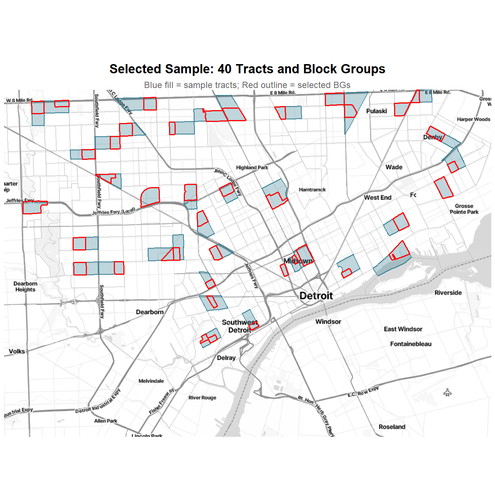
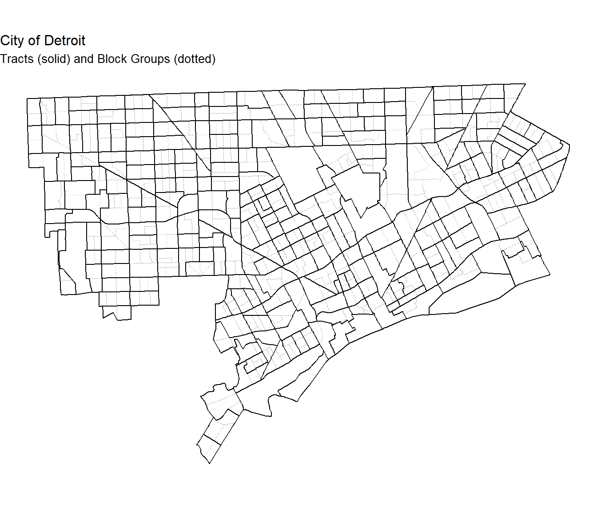
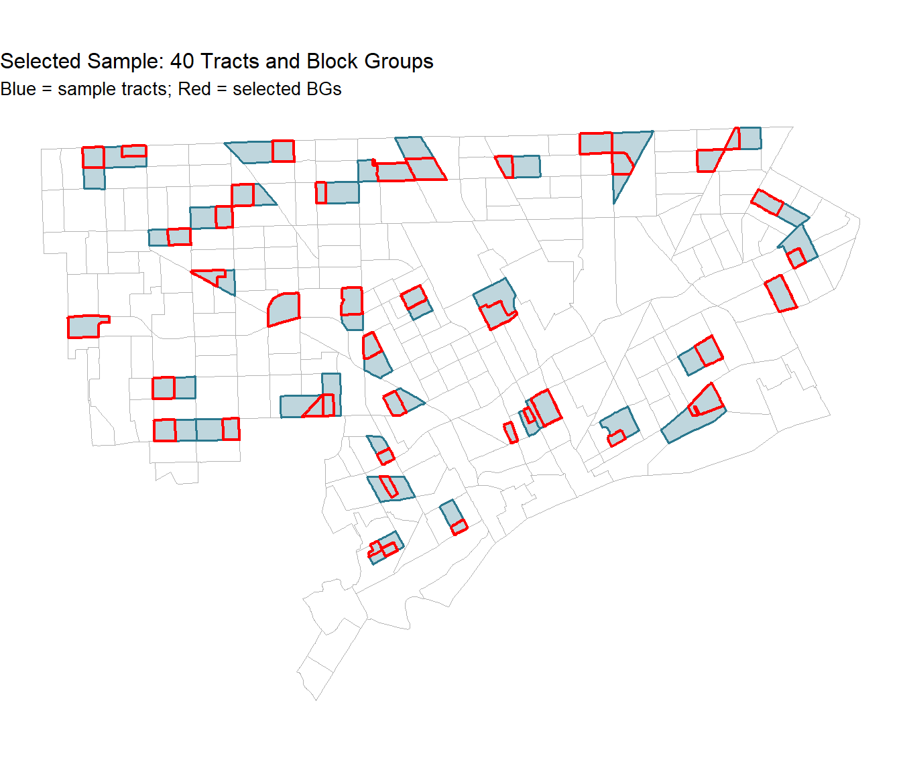

pacman::p_load(
tidyverse, readxl,
sampling,
survey, srvyr,
PracTools,
sf, tigris, ggmap,
tidycensus,
viridis, patchwork,
knitr, kableExtra, scales, here
)
options(tigris_class = "sf", tigris_use_cache = TRUE, scipen = 999)
set.seed(-77)
# add api key, this will only work for me
# load private API keys
api_keys <- read_csv("D:/repos/api-keys.csv", show_col_types = FALSE)
# Census API key
census_key <- api_keys |>
filter(key_id == "Census_key") |>
pull(key)
census_api_key(key = census_key, install = FALSE)
# Stadia Maps API key
stadia_key <- api_keys |>
filter(key_id == "stadiamaps_key") |>
pull(key)
register_stadiamaps(key = stadia_key)Detroit Transportation Survey
Multi-Stage Area Probability Sample Design
Sample Design
Design Goals
The sample must satisfy four requirements simultaneously:
- Domain sample sizes: 1,000 respondents split equally (250 per group) across four age domains: 18–34, 35–49, 50–64, and 65+.
- Self-weighting within domains: every person in a given age group has the same overall selection probability, \(\pi_k(d) = f_d\), so that no weighting adjustments are needed to compensate for unequal selection across PSUs within a domain.
- Equal workload per PSU: the total expected number of persons to be contacted is the same in every sample tract, simplifying field management and cost control.
- Two-stage selection: 40 tracts (PSUs) selected with probability proportional to a composite measure of size, and 1 BG (SSU) per tract, also selected PPS (MOS). Person-level sampling rates are specified for field implementation but not executed here.
Packages and setup
- We load the packages needed for data wrangling (
tidyverse,readxl), sample selection (sampling), survey analysis (survey,srvyr,PracTools), spatial mapping (sf,tigris,ggmap,tidycensus,viridis), and report formatting (patchwork,knitr,scales). Thetidycensusandggmappackages each require an API key.
Data ingestion
- Quarto renders in a completely fresh R session — it does not have access to objects loaded in the RStudio live environment. We therefore read the data files using explicit paths. The
semi_join()ontract_fipsrestricts the Wayne County records to only those tracts that fall inside the City of Detroit boundary.
# anchor to project root regardless of where the .qmd lives
here::i_am("inputs/Detroit_MI.xlsx")
input_path <- here("inputs")
census_tract <- "Census_Tract_FIPS_Code_Detroit_MI.csv"
detroit_mi <- "Detroit_MI.xlsx"
tract_fips <- read_csv(
file.path(input_path, census_tract),
col_names = "GEOID",
col_types = cols(GEOID = col_character()),
skip = 1,
show_col_types = FALSE
)
tract <- read_excel(
file.path(input_path, detroit_mi),
sheet = "Tract"
) |>
mutate(Tract = as.character(Tract)) |>
semi_join(tract_fips, by = c("Tract" = "GEOID"))
bg <- read_excel(
file.path(input_path, detroit_mi),
sheet = "BlockGroup"
) |>
mutate(
BlockGroup = as.character(BlockGroup),
Tract = substr(BlockGroup, 1, 11)
) |>
semi_join(tract_fips, by = c("Tract" = "GEOID"))Target Population
The target population consists of all non-institutionalized persons aged 18 and older residing in the City of Detroit, Michigan. The 2020 Decennial Census DHC Summary File reports approximately 480,131 adults (18+) in approximately 309,916 households. After removing the 25 duplicated zero-population records for tract 9855 and 5 additional zero-adult tracts, the cleaned frame contains 270 eligible census tracts and 612 block groups. After applying the Kish (1965) linking procedure described in Section 1.3 to combine 5 undersized tracts with neighbors, the final frame used for selection contains 265 PSUs. The average number of adults per household is approximately 1.55.
Area Sampling Frame
Data sources
The sampling frame is constructed from two files:
- Census Tract FIPS Code Detroit MI.csv: 280 FIPS codes identifying Detroit census tracts, from the City of Detroit Open Data Portal.
- Detroit MI.xlsx: tract- and block-group-level population data provided by the course instructors, originating from the 2020 Decennial Census DHC Summary File for Wayne County, MI. It includes housing unit counts, total person counts, and person counts by sex and age from the P12 table (Sex by Age).
Data cleaning
- Tract 26163985500 (tract 9855) appears identically 25 times in the data with zero population in every column, likely a water body or uninhabited industrial zone. Since it contributes no eligible population, we drop all instances.
tract |>
filter(Tract == "26163985500") |>
select(1:10) |>
head() |>
kable(
booktabs = TRUE,
format = "latex"
) |>
kable_styling(
latex_options = c("striped", "scale_down", "hold_position")
)# drop this tract
tract <- tract |>
filter(Tract != "26163985500")
cat("We are left with", tract |> nrow(), "tracts")We are left with 275 tractsFrame construction (Assignment 8)
The DHC P12 table provides 49 Sex \(\times\) Age columns per geography (e.g.,
Male18to19Yrs,Female22to24Yrs). We need to collapse these into the four survey age domains (18–34, 35–49, 50–64, 65+). Theage_patternsnamed vector below is a single source of truth, it maps each domain label to a regex pattern that matches the corresponding P12 column names. If the domain boundaries ever change, only this vector needs updating.The pipeline works as follows:
pivot_longer()reshapes all sex-by-age columns into rows,map_chr()classifies each row into a domain using the regex patterns, andpivot_wider()collapses back to one row per tract (or BG) with domain population counts as columns. Persons under 18 do not match any pattern and are removed byfilter(!is.na(AgeGroup)).
# single source of truth for age domain classification.
# each name is the output domain label; each value is a
# regex pattern matching the P12 column name fragments
# that belong to that domain.
age_patterns <- c(
"Age18to34" = "18to19|20Yrs|21Yrs|22to24|25to29|30to34",
"Age35to49" = "35to39|40to44|45to49",
"Age50to64" = "50to54|55to59|60to61|62to64",
"Age65plus" = "65to66|67to69|70to74|75to79|80to84|GE85"
)
# psu frame (tract-level): one row per tract with
# TotHH, TotAdult, and four age domain counts
psu_frame <- tract |>
pivot_longer(
# here is the regex matching
cols = matches("^Male[^T]|^Female[^T]"),
names_to = "SexAge", values_to = "elements"
) |>
select(-TotPerson) |>
mutate(
# classify each sex-by-age column into a domain
AgeGroup = map_chr(SexAge, ~ {
match <- names(age_patterns)[str_detect(.x, age_patterns)]
if (length(match) == 0) NA_character_ else match
})
) |>
filter(!is.na(AgeGroup)) |>
# sum male + female within each domain for each tract
summarise(n = sum(elements), .by = c(Tract, TotHH, AgeGroup)) |>
pivot_wider(names_from = AgeGroup, values_from = n) |>
mutate(TotAdult = rowSums(across(starts_with("Age")))) |>
relocate(TotAdult, .after = "TotHH")
# ssu frame (block-group-level): same pipeline,
# but keeps the bg and parent tract identifiers
ssu_frame <- bg |>
pivot_longer(
cols = matches("^Male[^T]|^Female[^T]"),
names_to = "SexAge", values_to = "elements"
) |>
select(-TotPerson) |>
mutate(
AgeGroup = map_chr(SexAge, ~ {
match <- names(age_patterns)[str_detect(.x, age_patterns)]
if (length(match) == 0) NA_character_ else match
})
) |>
filter(!is.na(AgeGroup)) |>
summarise(n = sum(elements), .by = c(BlockGroup, Tract, TotHH, AgeGroup)) |>
pivot_wider(names_from = AgeGroup, values_from = n) |>
mutate(TotAdult = rowSums(across(starts_with("Age")))) |>
relocate(TotAdult, .after = "TotHH")
cat("psu frame:", nrow(psu_frame), "tracts\n")psu frame: 275 tractscat("ssu frame:", nrow(ssu_frame), "block groups\n")ssu frame: 627 block groupsQuality control and linking (VDK Ch. 11, Sec. 11.1)
Before sample selection, we must verify that every unit in the frame can support the required workload. VDK Chapter 11 (Sec. 11.1) describes the quality control checks: (1) does each BG provide an adequate workload? (2) will any BG have a large selection probability? The key feasibility check from VDK p. 287 is that the within-BG sampling rate must not exceed 1: \[\pi_{k|ij}(d) = \frac{\bar{q} \, f_d}{S_{ij}} \leq 1 \quad \text{for every BG } j \text{ and domain } d\] where \(\bar{q}\) is the workload per BG, \(f_d\) is the domain sampling rate, and \(S_{ij}\) is the BG-level composite MOS. If a BG violates this, more persons would need to be selected from a domain than actually exist there.
First, we drop tracts and BGs with zero adult population (these have \(S_i = 0\) and would cause division-by-zero in the selection probability formulas). We then identify small tracts that have all their BGs violate the feasibility check, and combine them with geographic neighbors following a linking procedure introduced by Kish (1965) recommended in VDK Ch. 11. A few small BGs within otherwise large tracts also violate feasibility, but since they have near-zero MOS they are extremely unlikely to be selected by the PPS procedure; we note their existence and would apply Kish linking in the field if one were selected.
# drop tracts with zero adult population --- these are
# ineligible areas (water, industrial, institutional)
zero_tracts <- psu_frame |> filter(TotAdult == 0)
cat("Zero-adult tracts to drop:\n")Zero-adult tracts to drop:zero_tracts |> select(Tract, TotHH, TotAdult) |> kable()| Tract | TotHH | TotAdult |
|---|---|---|
| 26163981800 | 1 | 0 |
| 26163984200 | 0 | 0 |
| 26163985800 | 0 | 0 |
| 26163985900 | 0 | 0 |
| 26163981700 | 0 | 0 |
psu_frame <- psu_frame |> filter(TotAdult > 0)
ssu_frame <- ssu_frame |> filter(Tract %in% psu_frame$Tract)
# also drop zero-adult BGs within remaining tracts
cat("Zero-adult BGs dropped:", sum(ssu_frame$TotAdult == 0), "\n")Zero-adult BGs dropped: 9 ssu_frame <- ssu_frame |> filter(TotAdult > 0)
cat("after dropping zeros, we are left with", nrow(psu_frame), "tracts,",
nrow(ssu_frame), "BGs\n")after dropping zeros, we are left with 270 tracts, 612 BGs
- Next we compute preliminary design parameters to identify undersized units. The domain sampling rates under Approach A (selection-based, see Design Parameter section below) are \(f_d = n_d^{\text{select}} / N_d\) where \(n_d^{\text{select}} = 250 / r_d\) and \(r_d\) is the expected response rate from the project assignment. The workload per BG is \(\bar{q} = \sum_d n_d^{\text{select}} / (m \cdot \bar{n})\). The minimum BG MOS for feasibility is \(\bar{q} \cdot \max(f_d)\), corresponding to roughly 54 to 62 adults depending on age mix (54 if the BG’s adults are concentrated in the highest-rate 35–49 domain, 62 if in the lowest-rate 50–64 domain).
# design constants from the assignment
m <- 40 # sample PSUs
n_bar <- 1 # BGs per sample PSU
# preliminary f_d from the current (pre-linking) frame
prelim_params <- tibble(
domain = c("18-34", "35-49", "50-64", "65+"),
n_respond = rep(250, 4),
# given to us
resp_rate = c(0.35, 0.45, 0.50, 0.65),
N_d = c(sum(psu_frame$Age18to34), sum(psu_frame$Age35to49),
sum(psu_frame$Age50to64), sum(psu_frame$Age65plus))
) |>
mutate(n_select = n_respond / resp_rate, f_d = n_select / N_d)
f_d_prelim <- prelim_params$f_d
names(f_d_prelim) <- prelim_params$domain
q_bar_prelim <- sum(prelim_params$n_select) / (m * n_bar)
# preliminary bg-level mos for feasibility checks
ssu_frame <- ssu_frame |>
mutate(MOS_bg = f_d_prelim["18-34"] * Age18to34 +
f_d_prelim["35-49"] * Age35to49 +
f_d_prelim["50-64"] * Age50to64 +
f_d_prelim["65+"] * Age65plus)
# minimum mos needed: q_bar * max(f_d)
min_mos <- q_bar_prelim * max(f_d_prelim)
cat("What is the min BG MOS for feasibility?", round(min_mos, 4), "\n")What is the min BG MOS for feasibility? 0.2642 # identify violating BGs
ssu_violations <- ssu_frame |> filter(MOS_bg < min_mos)
cat("How many BGs are failing feasibility?", nrow(ssu_violations), "\n\n")How many BGs are failing feasibility? 14 # which tracts have ALL their BGs failing? these are the
# undersized tracts that need PSU-level linking
tiny_tracts <- ssu_frame |>
filter(Tract %in% ssu_violations$Tract) |>
group_by(Tract) |>
summarise(n_bgs = n(),
n_fail = sum(MOS_bg < min_mos), .groups = "drop") |>
filter(n_fail == n_bgs) |>
pull(Tract)
cat("How many undersized tracts (all BGs fail):", length(tiny_tracts), "\n")How many undersized tracts (all BGs fail): 5 psu_frame |> filter(Tract %in% tiny_tracts) |>
select(Tract, TotHH, TotAdult) |>
kable()| Tract | TotHH | TotAdult |
|---|---|---|
| 26163524500 | 39 | 71 |
| 26163983600 | 3 | 9 |
| 26163984100 | 2 | 3 |
| 26163985000 | 8 | 16 |
| 26163985200 | 1 | 1 |
- We combine the undersized tracts with their nearest geographic neighbor on the FIPS-sorted frame. The combined unit’s populations and MOS are summed. This is a simplified version of the Kish (1965) linking procedure, where we sort the frame, and for each undersized unit, merge it forward into the next adequately-sized unit.
# find the nearest non-tiny neighbor for each undersized tract
all_sorted <- psu_frame |> arrange(Tract) |> pull(Tract)
non_tiny <- setdiff(all_sorted, tiny_tracts)
psu_link_map <- tibble(original = tiny_tracts) |>
mutate(linked_to = map_chr(original, function(tr) {
fwd <- non_tiny[non_tiny > tr]
bwd <- non_tiny[non_tiny < tr]
if (length(fwd) > 0) fwd[1] else tail(bwd, 1)
}))
cat("We link the following PSUs:\n")We link the following PSUs:psu_link_map |> kable()| original | linked_to |
|---|---|
| 26163524500 | 26163524600 |
| 26163983600 | 26163985100 |
| 26163984100 | 26163985100 |
| 26163985000 | 26163985100 |
| 26163985200 | 26163985300 |
# assign PSU_ID: linked tracts get their neighbor's id
psu_frame <- psu_frame |>
mutate(PSU_ID = if_else(
Tract %in% psu_link_map$original,
psu_link_map$linked_to[match(Tract, psu_link_map$original)],
Tract))
ssu_frame <- ssu_frame |>
mutate(PSU_ID = if_else(
Tract %in% psu_link_map$original,
psu_link_map$linked_to[match(Tract, psu_link_map$original)],
Tract))
# aggregate to composite psu level
psu_frame <- psu_frame |>
group_by(PSU_ID) |>
reframe(n_tracts = n(), TotHH = sum(TotHH), TotAdult = sum(TotAdult),
Age18to34 = sum(Age18to34), Age35to49 = sum(Age35to49),
Age50to64 = sum(Age50to64), Age65plus = sum(Age65plus)) |>
rename(Tract = PSU_ID)
# update ssu_frame: drop old Tract (original parent tract id),
# replace with PSU_ID (the linked-to tract), and drop stale MOS
ssu_frame <- ssu_frame |>
select(-Tract, -MOS_bg) |>
rename(Tract = PSU_ID)
cat("How many PSU after linking?", nrow(psu_frame), "PSUs\n")How many PSU after linking? 265 PSUscat("How many combined PSUs?", sum(psu_frame$n_tracts > 1), "\n")How many combined PSUs? 3 Design parameters (Assignment 8)
The composite MOS method (VDK Sec. 10.5) requires domain sampling rates \(f_d = n_d / N_d\), where \(n_d\) is the desired domain sample size and \(N_d\) is the domain population. VDK p. 282 defines this notation. There are two conventions for what \(n_d\) means:
Approach A (selection-based): \(n_d = n_d^{\text{select}} = 250 / r_d\), the number of persons to contact in each domain, inflated for the expected non-response rate \(r_d\). This builds NR into the MOS so the design directly yields enough selections to produce 250 respondents per domain after expected losses.
Approach B (respondent-based, VDK Ch. 11 pattern): \(n_d = 250\), the respondent target. This is how the Anne Arundel County example in VDK Table 11.1 is set up. NR inflation is then applied at the person-selection stage in the field rather than in the MOS.
Under Approach A, the workload per BG is \(\bar{q} = \sum_d n_d^{\text{select}} / (m \cdot \bar{n}) \approx 53.9\) persons to contact. Under Approach B, \(\bar{q} = 1000 / 40 = 25\) respondents. We proceed with Approach A because it keeps all selection probabilities self-contained at the design stage — field teams simply apply the rates; no additional NR inflation is needed.
# recompute N_d from the cleaned, linked frame
N_d <- c(sum(psu_frame$Age18to34), sum(psu_frame$Age35to49),
sum(psu_frame$Age50to64), sum(psu_frame$Age65plus))
# approach A: selection-based f_d
design_params <- tibble(
domain = c("18-34", "35-49", "50-64", "65+"),
n_respond = rep(250, 4),
resp_rate = c(0.35, 0.45, 0.50, 0.65),
N_d = N_d
) |>
mutate(
n_select = n_respond / resp_rate, # inflate for NR
f_d = n_select / N_d # domain sampling rate
)
cat("Design parameters (Approach A):\n")Design parameters (Approach A):design_params |>
mutate(across(where(is.numeric), ~ round(.x, 6))) |>
kable()| domain | n_respond | resp_rate | N_d | n_select | f_d |
|---|---|---|---|---|---|
| 18-34 | 250 | 0.35 | 161357 | 714.2857 | 0.004427 |
| 35-49 | 250 | 0.45 | 113272 | 555.5556 | 0.004905 |
| 50-64 | 250 | 0.50 | 117763 | 500.0000 | 0.004246 |
| 65+ | 250 | 0.65 | 87739 | 384.6154 | 0.004384 |
# extract as named vector
f_d <- design_params$f_d
names(f_d) <- design_params$domain
total_select <- sum(design_params$n_select)
q_bar <- total_select / (m * n_bar)
cat("Total selections (S):", round(total_select, 1), "\n")Total selections (S): 2154.5 cat("Workload per BG (q_bar):", round(q_bar, 1), "persons\n")Workload per BG (q_bar): 53.9 personsComposite MOS (VDK Eq. 10.1, Assignment 8)
The composite measure of size for PSU \(i\) is defined as (VDK Eq. 10.1, p. 282): \[S_i = \sum_{d=1}^{D} f_d \cdot N_i(d)\] This quantity represents the expected sample size from PSU \(i\) if the desired domain sampling rates were applied to its domain populations. The total MOS across all PSUs equals the total desired sample size: \(S = \sum_{i \in U} S_i = \sum_d f_d N_d = n^{\text{select}}\) (VDK p. 282).
PSU selection probabilities are proportional to \(S_i\) (VDK p. 282): \[\pi_i = \frac{m \cdot S_i}{S}\]
For the three-stage extension (VDK p. 286), the BG-level composite MOS is \(S_{ij} = \sum_d f_d \cdot Q_{ij}(d)\) where \(Q_{ij}(d)\) is the population of domain \(d\) in BG \(j\) of tract \(i\). The BG conditional selection probability is \(\pi_{j|i} = \bar{n} \cdot S_{ij} / S_i\) (VDK p. 286). Note that since \(\bar{n} = 1\) in our design, \(\pi_{j|i} = S_{ij} / S_i\).
The within-BG person sampling rate for domain \(d\) is (VDK p. 288): \[\pi_{k|ij}(d) = \frac{\bar{q} \, f_d}{S_{ij}}\] The self-weighting property then follows algebraically (VDK p. 286): \[\pi_i \cdot \pi_{j|i} \cdot \pi_{k|ij}(d) = \frac{m \, S_i}{S} \cdot \frac{\bar{n} \, S_{ij}}{S_i} \cdot \frac{\bar{q} \, f_d}{S_{ij}} = \frac{m \, \bar{n} \, \bar{q}}{S} \, f_d = f_d\] since \(S = m \cdot \bar{n} \cdot \bar{q}\) (VDK p. 286).
The workload is constant in every BG (VDK p. 287): \(\sum_d q^*_{ij}(d) = \bar{q}\), where \(q^*_{ij}(d) = \bar{q} \, f_d \, Q_{ij}(d) / S_{ij}\) is the expected number of domain-\(d\) selections in BG \(ij\) (analogous to VDK Eq. 10.2 at the SSU level).
# psu-level composite mos and selection probabilities
# use match() pattern to pin each domain column to its f_d value,
# avoiding the across()*vector recycling bug (which cycles f_d
# element-wise in column-major order, not column-by-column)
domain_cols <- c("Age18to34", "Age35to49", "Age50to64", "Age65plus")
# recompute MOS with the FINAL f_d (should already be in compute-mos)
psu_frame <- psu_frame |>
mutate(
MOS = rowSums(across(all_of(domain_cols),
~ .x * f_d[match(cur_column(), domain_cols)])),
pi_i = m * MOS / sum(MOS))
S_total <- sum(psu_frame$MOS)
cat("S =", round(S_total, 2),
"| should equal total_select =", round(total_select, 2), "\n")S = 2154.46 | should equal total_select = 2154.46 cat("pi_i (PSU selection probability) range:",
round(range(psu_frame$pi_i), 4), "\n")pi_i (PSU selection probability) range: 0.0137 0.3629 cat("any pi_i > 1?", any(psu_frame$pi_i > 1), "\n")any pi_i > 1? FALSE # bg-level composite mos (same match() pattern)
ssu_frame <- ssu_frame |>
mutate(MOS_bg = rowSums(across(all_of(domain_cols),
~ .x * f_d[match(cur_column(), domain_cols)])))VDK 10.1 verification table
Following the spreadsheet layout in VDK Example 10.1 (Table 10.1, p. 284), we verify four properties at the PSU level. These are the same checks I performed in Assignment 8 (VDK Exercise 10.3) using the two-domain example, extended here to four domains and applied to our Detroit frame.
- Feasibility: \(f_d \leq S_i / \bar{q}\) for every domain, equivalently \(\bar{q} f_d / S_i \leq 1\).
- Expected domain sample sizes: \(n^*_i(d) = \bar{q} \, f_d \, N_i(d) / S_i\) (VDK Eq. 10.2 adapted to our notation).
- Constant workload: \(\sum_d n^*_i(d) = \bar{q}\) for every PSU.
- Self-weighting: \(\pi_i \cdot \pi_{k|i}(d) = f_d\), where \(\pi_{k|i}(d) = \bar{q} \, f_d / S_i\) is the within-PSU person rate.
vdk_table <- psu_frame |>
# step 1: within-psu rates
mutate(
across(all_of(domain_cols),
~ q_bar * f_d[match(cur_column(), domain_cols)] / MOS,
.names = "rate_{.col}")) |>
# step 2: checks
mutate(
across(starts_with("rate_"), ~ .x <= 1, .names = "feas_{.col}"),
exp_workload = across(all_of(domain_cols),
~ .x * q_bar * f_d[match(cur_column(), domain_cols)] / MOS) |>
rowSums(),
across(starts_with("rate_"), ~ pi_i * .x, .names = "sw_{.col}")
)
cat("(1) Are all within-psu rates <= 1?\n")(1) Are all within-psu rates <= 1?vdk_table |> summarise(across(starts_with("feas"), ~ all(.x))) |>
kable()| feas_rate_Age18to34 | feas_rate_Age35to49 | feas_rate_Age50to64 | feas_rate_Age65plus |
|---|---|---|---|
| TRUE | TRUE | TRUE | TRUE |
cat("\n(3) workload per psu (should all =", round(q_bar, 2), "):\n")
(3) workload per psu (should all = 53.86 ):summary(vdk_table$exp_workload) Min. 1st Qu. Median Mean 3rd Qu. Max.
53.86 53.86 53.86 53.86 53.86 53.86 cat("\n(4) self-weighting check (first 5 PSUs):\n")
(4) self-weighting check (first 5 PSUs):cat("target f_d:", round(f_d, 6), "\n")target f_d: 0.004427 0.004905 0.004246 0.004384 vdk_table |> select(Tract, starts_with("sw_")) |>
slice_head(n = 5) |>
mutate(across(where(is.numeric), ~ round(.x, 6))) |>
kable()| Tract | sw_rate_Age18to34 | sw_rate_Age35to49 | sw_rate_Age50to64 | sw_rate_Age65plus |
|---|---|---|---|---|
| 26163500100 | 0.004427 | 0.004905 | 0.004246 | 0.004384 |
| 26163500200 | 0.004427 | 0.004905 | 0.004246 | 0.004384 |
| 26163500300 | 0.004427 | 0.004905 | 0.004246 | 0.004384 |
| 26163500400 | 0.004427 | 0.004905 | 0.004246 | 0.004384 |
| 26163500500 | 0.004427 | 0.004905 | 0.004246 | 0.004384 |
Uniform rate discussion
- Could a single sampling rate \(f = n^{\text{select}} / N_{\text{adult}}\) be used for all persons regardless of age domain?
- The table below shows the expected number of respondents per domain under such a uniform rate. Because response rates vary substantially (0.35 for ages 18–34 vs. 0.65 for 65+), a uniform rate over-samples domains with higher response rates and under-samples those with lower rates. The 35–49 group falls approximately 8.5% short of the 250 target. The composite MOS avoids this problem by building domain-specific rates into the design from the start.
f_uniform <- total_select / sum(psu_frame$TotAdult)
design_params |>
mutate(exp_respond = f_uniform * N_d * resp_rate,
shortfall_pct = round((n_respond - exp_respond) / n_respond * 100, 1)) |>
select(domain, N_d, exp_respond, shortfall_pct) |> kable()| domain | N_d | exp_respond | shortfall_pct |
|---|---|---|---|
| 18-34 | 161357 | 253.4159 | -1.4 |
| 35-49 | 113272 | 228.7247 | 8.5 |
| 50-64 | 117763 | 264.2146 | -5.7 |
| 65+ | 87739 | 255.9081 | -2.4 |
Sample Selection (VDK Ch. 3, Ch. 11)
We select the sample in two stages using
UPsystematic()from thesamplingpackage (Tille and Matei, 2016), which implements Madow’s systematic PPS method. The PSU frame is sorted by FIPS code before selection, which provides implicit geographic stratification — adjacent tracts on the sorted list tend to be geographic neighbors, so the systematic selection spreads the sample across the city (VDK Sec. 3.3).The assignment specifies
set.seed(-77)for reproducibility. Systematic PPS does not permit computation of exact joint selection probabilities (\(\pi_{ii'} = 0\) for some pairs), which precludes the Horvitz–Thompson variance estimator. In practice, we use the with-replacement variance approximation via paired analytic strata.
Stage 1: PSU selection
- We select \(m = 40\) tracts with inclusion probabilities \(\pi_i = m \cdot S_i / S\). The
UPsystematic()function takes these as input and returns a 0/1 indicator for each PSU.
# sort by fips for implicit geographic stratification
psu_frame <- psu_frame |> arrange(Tract)
set.seed(-77)
psu_sample <- psu_frame |>
mutate(selected = UPsystematic(pik = pi_i)) |>
filter(selected == 1)
cat("How many PSUs did we select?", nrow(psu_sample), "\n")How many PSUs did we select? 40 Stage 2: SSU (block group) selection
- Within each of the 40 sample tracts, we select \(\bar{n} = 1\) BG with probability proportional to the BG-level composite MOS: \(\pi_{j|i} = \bar{n} \cdot S_{ij} / S_i = S_{ij} / S_i\) (VDK p. 286). For tracts with only a single BG, the selection is deterministic (\(\pi_{j|i} = 1\)). The
select_one_bg()helper handles both cases.
# get BGs in sample tracts and compute conditional probabilities
bg_in_sample <- ssu_frame |>
filter(Tract %in% psu_sample$Tract) |>
left_join(psu_sample |>
select(Tract, MOS_psu = MOS), by = "Tract") |>
mutate(pij_given_i = n_bar * MOS_bg / MOS_psu)
# helper: select 1 bg from a tract via systematic pps
set.seed(-77)
select_one_bg <- function(bg_sub) {
if (nrow(bg_sub) == 1) return(bg_sub |>
mutate(ssu_selected = 1L))
pik_bg <- pmin(bg_sub$pij_given_i / sum(bg_sub$pij_given_i) * n_bar, 1)
bg_sub |>
mutate(ssu_selected = as.integer(UPsystematic(pik = pik_bg)))
}
bg_selected <- bg_in_sample |>
group_by(Tract) |>
group_split() |>
map_dfr(select_one_bg) |>
filter(ssu_selected == 1)
cat("How many BGs selected?", nrow(bg_selected), "\n")How many BGs selected? 40 Selection probabilities
- The joint selection probability of BG \(j\) in tract \(i\) is \(\pi_{ij} = \pi_i \cdot \pi_{j|i}\) (VDK p. 308, Ch. 11). This is what our two-stage selection actually produces. We also compute the person-level domain rates \(\pi_{k|ij}(d) = \bar{q} f_d / S_{ij}\) that field teams would implement, and verify that the expected workload per BG equals \(\bar{q}\).
sample_bgs <- bg_selected |>
left_join(psu_sample |> select(Tract, pi_i), by = "Tract") |>
mutate(
pi_ij = pi_i * pij_given_i,
across(all_of(domain_cols),
~ q_bar * f_d[match(cur_column(), domain_cols)] / MOS_bg,
.names = "rate_{.col}"),
exp_workload = across(all_of(domain_cols),
~ .x * q_bar * f_d[match(cur_column(), domain_cols)] / MOS_bg) |>
rowSums(),
# base weights (VDK Ch. 13)
d0_bg = 1 / pi_ij,
d0_18to34 = 1 / f_d["18-34"],
d0_35to49 = 1 / f_d["35-49"],
d0_50to64 = 1 / f_d["50-64"],
d0_65plus = 1 / f_d["65+"]
)
cat("What is the pi_ij range?", round(range(sample_bgs$pi_ij), 4), "\n")What is the pi_ij range? 0.0368 0.1652 cat("Are there any pi_ij > 1?", any(sample_bgs$pi_ij > 1), "\n")Are there any pi_ij > 1? FALSE cat("What is the nworkload per BG? (should =", round(q_bar, 1), "):\n")What is the nworkload per BG? (should = 53.9 ):summary(sample_bgs$exp_workload) Min. 1st Qu. Median Mean 3rd Qu. Max.
53.86 53.86 53.86 53.86 53.86 53.86 Description of household and person selection (third stage)
In area probability sampling, persons are reached through households (VDK Ch. 10). We do not execute this stage because no address listing exists, but we describe the procedure that field teams would follow in each selected BG.
The key outcome variables, vehicle ownership, transit use, skipping trips, asking for rides, are household-level or household-correlated characteristics. If multiple persons from the same household were selected, their responses would be correlated, inflating the design effect and reducing precision. For this reason we recommend selecting one eligible adult per sampled household using a random selection method such as the Kish grid or next-birthday rule.
The field procedure within each selected BG:
- Household listing: interviewers compile a complete listing of all occupied housing units using maps and Census address data.
- Household sampling: households are sampled systematically at a rate that, combined with \(\pi_{ij}\), yields the desired person-level rates. With approximately 1.55 eligible adults per household in Detroit, the HH rate is adjusted accordingly.
- Screening: at each sampled HH, interviewers administer a brief screener to enumerate all persons 18+ and classify each into an age domain.
- Within-HH selection: one eligible adult is selected at random. The selection probability is set to maintain \(\pi_{k|ij}(d) = \bar{q} f_d / S_{ij}\) for each domain \(d\).
- Verification: the overall probability is \(\pi_i \cdot \pi_{j|i} \cdot \pi_{k|ij}(d) = f_d\), confirming self-weighting. The expected sample sizes are not integers, as VDK notes after Example 10.1, it is important to sample at the specified rates rather than rounding to fixed counts.
Anticipated Precision (VDK Ch. 9)
For the key survey variable, the proportion of Detroit residents whose main means of transportation is public transit, precision under the cluster design depends on the design effect. For a two-stage cluster sample, the approximate design effect is (VDK Ch. 9, Eq. 9.5): \[\text{deff} \approx 1 + (\bar{b} - 1) \, \delta\] where \(\bar{b}\) is the average number of respondents per PSU (\(\approx 25\) in our design) and \(\delta\) is the intraclass correlation coefficient measuring homogeneity within tracts. Values of \(\delta\) for demographic/behavioral variables in U.S. urban populations typically range from 0.01 to 0.05, yielding deffs between 1.2 and 2.2.
The variance of an estimated proportion \(\hat{p}\) under the cluster design is approximately: \[\text{Var}(\hat{p}) \approx \text{deff} \cdot \frac{p(1-p)}{n}\] An analyst would estimate this using the ultimate cluster variance estimator, which in the with-replacement form is: \[v_{PSU} = \frac{m}{m-1} \sum_{i \in s} \left( \sum_{k \in s_i} w_k y_k - \frac{\sum_{i \in s} \sum_{k \in s_i} w_k y_k}{m} \right)^2\] This is implemented automatically by
survey::svymean()when the design object specifies PSUs and strata (see Sec. 6).The table below shows the standard error, coefficient of variation, and 95% margin of error for a range of proportions and design effects at \(n = 1000\) total respondents.
expand_grid(p = c(.10, .15, .20, .25, .30), deff = c(1.5, 2.0, 2.5)) |>
mutate(n = 1000,
se = sqrt(deff * p * (1 - p) / n),
cv = se / p,
moe = 1.96 * se) |>
mutate(across(where(is.numeric), ~ round(.x, 4))) |>
kable(n = Inf)| p | deff | n | se | cv | moe |
|---|---|---|---|---|---|
| 0.10 | 1.5 | 1000 | 0.0116 | 0.1162 | 0.0228 |
| 0.10 | 2.0 | 1000 | 0.0134 | 0.1342 | 0.0263 |
| 0.10 | 2.5 | 1000 | 0.0150 | 0.1500 | 0.0294 |
| 0.15 | 1.5 | 1000 | 0.0138 | 0.0922 | 0.0271 |
| 0.15 | 2.0 | 1000 | 0.0160 | 0.1065 | 0.0313 |
| 0.15 | 2.5 | 1000 | 0.0179 | 0.1190 | 0.0350 |
| 0.20 | 1.5 | 1000 | 0.0155 | 0.0775 | 0.0304 |
| 0.20 | 2.0 | 1000 | 0.0179 | 0.0894 | 0.0351 |
| 0.20 | 2.5 | 1000 | 0.0200 | 0.1000 | 0.0392 |
| 0.25 | 1.5 | 1000 | 0.0168 | 0.0671 | 0.0329 |
| 0.25 | 2.0 | 1000 | 0.0194 | 0.0775 | 0.0380 |
| 0.25 | 2.5 | 1000 | 0.0217 | 0.0866 | 0.0424 |
| 0.30 | 1.5 | 1000 | 0.0177 | 0.0592 | 0.0348 |
| 0.30 | 2.0 | 1000 | 0.0205 | 0.0683 | 0.0402 |
| 0.30 | 2.5 | 1000 | 0.0229 | 0.0764 | 0.0449 |
- For a transit use proportion of approximately \(p = 0.20\) with \(\text{deff} = 2.0\), the 95% margin of error is \(\pm\) 0.035, which is adequate for most policy analyses. Domain-level estimates (250 respondents each) would have approximately double the margin of error, around \(\pm\) 0.07.
Weighting Plan (Assignment 9)
Overview for managers
Survey weights are numbers assigned to each respondent that allow us to produce estimates representative of the entire Detroit adult population. Without proper weighting, groups that were oversampled or that had higher response rates would be overrepresented in the estimates.
Base weights (VDK Ch. 13, Sec. 3)
The base weight (also called design weight) for a respondent is the inverse of the overall selection probability. At the BG level, our two-stage selection gives a joint probability of \(\pi_{ij} = \pi_i \cdot \pi_{j|i}\), so the BG-level base weight is: \[d_{0,ij} = \frac{1}{\pi_i \cdot \pi_{j|i}}\]
Under the full three-stage self-weighting design, the person-level probability in domain \(d\) would be \(\pi_k(d) = f_d\) (VDK p. 283), giving a base weight of \(d_0(d) = 1/f_d = N_d / n_d^{\text{select}}\) that is constant within each domain (Lecture Ch. 13, Example 13.3).
QC check (Lecture Slide 20): the sum of base weights across the expected sample in each domain should approximate the domain population total \(N_d\).
Unknown eligibility (VDK Ch. 13, Sec. 4)
During field listing, interviewers may encounter housing units whose eligibility cannot be determined — for example, units that appear occupied but where contact is never made, or addresses that turn out to be vacant or demolished. These cases are classified as unknown eligibility (\(s_{UNK}\)).
The standard approach is to redistribute the weight of unknowns to cases with known eligibility status within adjustment classes formed from frame variables available for all cases (Lecture Slide 30): \[a_{1b} = \frac{\sum_{i \in s_b} d_{0i}}{\sum_{i \in s_{b,KN}} d_{0i}}\] where \(s_b\) is all sample cases in class \(b\) and \(s_{b,KN}\) is the subset whose eligibility is known. The adjusted weight becomes \(d_{1i} = a_{1b} \cdot d_{0i}\) for cases in \(s_{b,KN}\) and zero for unknowns. Adjustment classes could be formed from tract-level Census demographics (e.g., vacancy rates, housing type).
Non-response adjustment (VDK Ch. 13, Sec. 5.2; Lecture Slides 45–49)
Among cases known to be eligible, some will decline to participate. The weighting class NR adjustment within class \(c\) is (Lecture Slide 48): \[a_{2c} = \frac{\sum_{i \in s_{c,E}} d_{1i}}{\sum_{i \in s_{c,ER}} d_{1i}}\] where \(s_{c,E}\) is the set of all eligible cases and \(s_{c,ER}\) is the subset of eligible respondents in class \(c\).
A natural choice for adjustment classes is the four age domains, since response rates are expected to vary substantially (0.35 for ages 18–34 vs. 0.65 for 65+). If the response probability is approximately constant within each domain, this simplifies to \(a_{2c} \approx 1/r_d\) (Lecture Slide 50).
Variance Estimation (Lecture Ch. 9; VDK Ch. 15)
Overview for managers
Because the sample is selected in stages (tracts, then block groups), standard formulas that assume simple random sampling would underestimate the uncertainty of survey estimates. Special variance estimation methods are needed that account for the clustering of persons within tracts. We describe two approaches: Taylor series linearization (our primary recommendation) and jackknife repeated replication (an alternative).
Taylor series linearization (primary method)
For systematic PPS selection, exact joint selection probabilities are not available. The standard practice (VDK Sec. 3.3) is to form paired analytic strata by grouping adjacent sample PSUs in the FIPS-sorted selection order. With \(m = 40\) sample PSUs, this creates 20 strata, each containing 2 PSUs.
Within this framework,
survey::svydesign()uses the ultimate cluster variance estimator (Lecture Ch. 9 Slide 65) to estimate standard errors via Taylor series linearization. This treats each PSU as a “cluster” and captures all within-PSU variability — from both the SSU and person stages — through the between-PSU variation.
# pair adjacent sample PSUs into analytic strata
psu_sample_ve <- psu_sample |>
arrange(Tract) |>
mutate(psu_order = row_number(),
analytic_stratum = ceiling(psu_order / 2))
cat("analytic strata:", max(psu_sample_ve$analytic_stratum), "\n")analytic strata: 20 psu_sample_ve |> count(analytic_stratum) |> kable()| analytic_stratum | n |
|---|---|
| 1 | 2 |
| 2 | 2 |
| 3 | 2 |
| 4 | 2 |
| 5 | 2 |
| 6 | 2 |
| 7 | 2 |
| 8 | 2 |
| 9 | 2 |
| 10 | 2 |
| 11 | 2 |
| 12 | 2 |
| 13 | 2 |
| 14 | 2 |
| 15 | 2 |
| 16 | 2 |
| 17 | 2 |
| 18 | 2 |
| 19 | 2 |
| 20 | 2 |
- The analyst would set up the survey design object as follows after data collection. The
ididentifies PSUs (tracts),strataidentifies the paired analytic strata, andweightsare the final NR-adjusted weights. Thenest = TRUEargument tellssvydesignthat PSU IDs restart within each stratum.
# after data collection, set up the tsl design:
detroit_design <- svydesign(
id = ~ psu_id,
strata = ~ analytic_stratum,
weights = ~ final_weight,
data = survey_data,
nest = TRUE)
# estimate proportion using public transit as main transport
svymean(~ I(transit == "public"), design = detroit_design)
# domain estimates by age group
svyby(~ I(transit == "public"), ~ age_domain,
design = detroit_design, svymean)Jackknife repeated replication (alternative method)
- As an alternative to linearization, delete-one-PSU jackknife (JKn) can be used (VDK Ch. 15). This method systematically drops one PSU at a time, re-estimates the statistic from each reduced sample, and computes the variance from the spread of these \(m = 40\) replicate estimates. JKn is especially useful for nonlinear estimators (e.g., ratios, quantiles) where the Taylor approximation may be less accurate.
# convert the tsl design to jackknife replicate weights
detroit_jk <- as.svrepdesign(
design = detroit_design,
type = "JKn")
# same estimators, variance computed via 40 replicates
svymean(~ I(transit == "public"), design = detroit_jk)Maps (Assignment 7)
- We produce maps of the Detroit sampling frame and the selected sample. The
ggmapversions use Stadia Maps basemap tiles (matching the Assignment 7 style) to provide geographic context — roads, water features, and neighborhood boundaries are visible beneath the choropleth layers. Thegeom_sffallback versions render without an API key.
# tigris kables download progress that ignores quarto's
# message/warning suppression, so we capture it manually
invisible(capture.output(suppressMessages({
detroit_tracts_sf <- tracts(state = "MI", county = "Wayne", year = 2020) |>
right_join(tract_fips, by = "GEOID") |> st_transform(crs = 4326)
detroit_bgs_sf <- block_groups(state = "MI", county = "Wayne", year = 2020) |>
mutate(GEOIDt = str_sub(GEOID, 1, 11)) |>
right_join(tract_fips, by = c("GEOIDt" = "GEOID")) |>
select(-GEOIDt) |> st_transform(crs = 4326)
})))# detroit bounding box for stadia tiles
detroit_bbox <- c(left = -83.29, bottom = 42.25, right = -82.91, top = 42.45)
detroit_basemap <- get_stadiamap(bbox = detroit_bbox, zoom = 12,
maptype = "stamen_toner_lite")
# shared theme matching assignment 7
map_theme <- theme_void() +
theme(plot.title = element_text(face = "bold", size = 13, hjust = .5),
plot.subtitle = element_text(size = 9, hjust = .5, color = "gray40"),
legend.title = element_text(face = "bold", size = 9),
legend.text = element_text(size = 8),
legend.key.height = unit(.8, "cm"),
legend.key.width = unit(.4, "cm"),
plot.margin = margin(-5, 4, -5, 4))# ggmap: all tracts and block groups on basemap
ggmap(detroit_basemap) +
geom_sf(data = detroit_bgs_sf, fill = NA,
linetype = "dotted", linewidth = 0.2, color = "grey50",
inherit.aes = FALSE) +
geom_sf(data = detroit_tracts_sf, fill = NA,
color = "black", linewidth = 0.3, inherit.aes = FALSE) +
labs(title = "City of Detroit",
subtitle = "Census Tracts (solid) and Block Groups (dotted)") +
map_theme# ggmap: selected tracts (blue fill) and selected BGs (red outline)
ggmap(detroit_basemap) +
geom_sf(data = detroit_tracts_sf, fill = NA,
color = "grey70", linewidth = 0.2, inherit.aes = FALSE) +
geom_sf(data = detroit_tracts_sf |> filter(GEOID %in% psu_sample$Tract),
fill = viridis(1, begin = 0.4, alpha = 0.3),
color = viridis(1, begin = 0.4), linewidth = 0.5,
inherit.aes = FALSE) +
geom_sf(data = detroit_bgs_sf |> filter(GEOID %in% sample_bgs$BlockGroup),
fill = NA, color = "red", linewidth = 0.7, inherit.aes = FALSE) +
labs(title = "Selected Sample: 40 Tracts and Block Groups",
subtitle = "Blue fill = sample tracts; Red outline = selected BGs") +
map_theme
Fallback maps (no API key required)
ggplot() +
geom_sf(data = detroit_bgs_sf, fill = NA,
linetype = "dotted", linewidth = 0.2, color = "grey50") +
geom_sf(data = detroit_tracts_sf, fill = NA,
color = "black", linewidth = 0.4) +
labs(title = "City of Detroit",
subtitle = "Tracts (solid) and Block Groups (dotted)") +
theme_void(base_size = 10)
ggplot() +
geom_sf(data = detroit_tracts_sf, fill = NA,
color = "grey70", linewidth = 0.3) +
geom_sf(data = detroit_tracts_sf |> filter(GEOID %in% psu_sample$Tract),
fill = viridis(1, begin = 0.4, alpha = 0.3),
color = viridis(1, begin = 0.4), linewidth = 0.6) +
geom_sf(data = detroit_bgs_sf |> filter(GEOID %in% sample_bgs$BlockGroup),
fill = NA, color = "red", linewidth = 0.8) +
labs(title = "Selected Sample: 40 Tracts and Block Groups",
subtitle = "Blue = sample tracts; Red = selected BGs") +
theme_void(base_size = 10)
Appendix
A. Sample PSU and SSU listing
- The table below lists all 40 selected BGs with their Census population data, composite MOS, selection probabilities at each stage (\(\pi_i\) and \(\pi_{j|i}\)), the joint BG probability (\(\pi_{ij}\)), and the domain-specific person sampling rates that field teams would implement. The rates are listed in the
rate_columns.
sample_listing <- sample_bgs |>
select(Tract, BlockGroup, TotAdult, starts_with("Age"),
MOS_bg, pi_i, pij_given_i, pi_ij,
starts_with("rate_"), starts_with("d0_"), exp_workload) |>
arrange(Tract)
# table 1: census data and selection probabilities
sample_listing |>
select(Tract, BlockGroup, TotAdult, MOS_bg, pi_i, pij_given_i, pi_ij) |>
mutate(across(where(is.numeric), ~ round(.x, 4))) |>
kable(booktabs = TRUE, format = "latex")# table 2: person-level domain rates and workload
sample_listing |>
select(Tract, BlockGroup, starts_with("rate_"), exp_workload) |>
mutate(
# shorten fips to last 6 digits for display
Tract = str_sub(Tract, -6),
BlockGroup = str_sub(BlockGroup, -7),
across(where(is.numeric), ~ round(.x, 4))
) |>
kable(booktabs = TRUE, format = "latex") |>
kable_styling(latex_options = c("scale_down", "hold_position"))B. Export files
write_csv(psu_frame, here("outputs", "FRAME_PSU_EffectSize.csv"))
write_csv(ssu_frame, here("outputs", "FRAME_BG_EffectSize.csv"))
write_csv(sample_listing, here("outputs", "SAMPLE_EffectSize.csv"))C. AI Disclosure
This project utilized Claude (Anthropic, Opus 4.6) as an AI coding assistant. The tool was used to debug R code throughout development, including diagnosing vector recycling issues with across() when multiplying domain columns by the f_d vector, resolving rename() conflicts caused by duplicate column names after the PSU linking step, and troubleshooting kable() and kableExtra table formatting for PDF output such as fitting wide tables using scale_down and splitting listings into separate display tables. Claude also assisted with map rendering — suppressing verbose tigris download output during Quarto rendering and configuring ggmap basemap layers with inherit.aes = FALSE for proper geom_sf overlay alignment. All AI outputs were reviewed, tested, and modified by team members before inclusion.